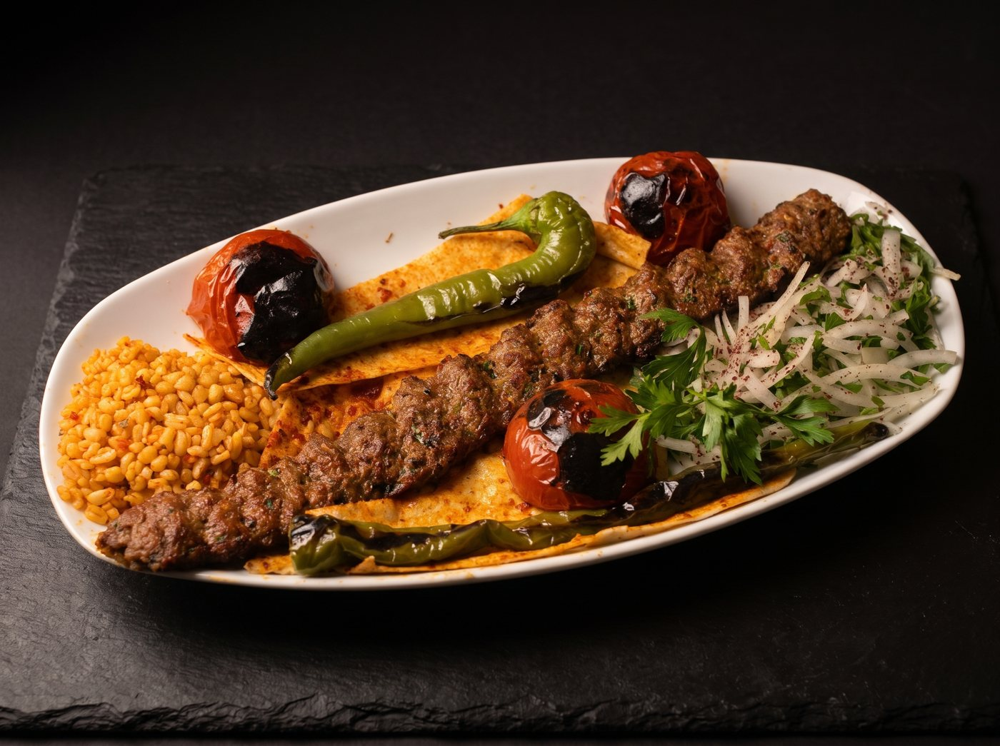
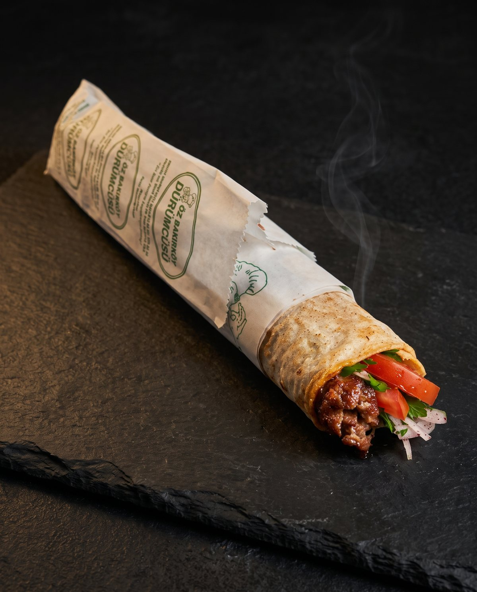

Menü
Kebaplar kömür ateşinde, dürümler sıcak soslu lavaşta. Adana ve Urfa zırh kıymasıdır.
Güncel fiyatlar ve günün çeşitleri için 0212 571 04 20

Porsiyon kebaplar
14 çeşit, kömür ateşindeAdana Kebap
Zırh kıymasıKömür ateşinde; bulgur pilavı, köz biber, soğan piyazı ve domatesle.
Urfa Kebap
Zırh kıymasıKömür ateşinde; bulgur pilavı, közde biber, domates ve soğanla.
Beyti Sarma
Kuzu etiyle; özel beyti sosu, köz biber, yoğurt ve bulgur pilavıyla.
Çöp Şiş
Terbiyeli küçük şişler; közde biber, domates, soğan piyazı ve bulgur pilavıyla.
Patlıcanlı Kebap
Marine et ve köz patlıcan; köz biber, domates ve soğanla.
Domatesli Kebap
Özel soslu domates kebabı; bulgur pilavı, közde biber ve soğan piyazıyla.
Kuzu Pirzola
Kömür ateşinde; bulgur pilavı, köz biber, domates ve maydanozla.
Ciğer Şiş
Terbiyeli ciğer; domates, köz biber ve soğan piyazıyla.
Yürek Şiş
Kömür ateşinde yürek şiş.
Dana Biftek
Marine edilmiş dana biftek, kömür ateşinde.
Tavuk Şiş
Özel sosla marine tavuk; bulgur pilavı, köz biber ve soğan piyazıyla.
Tavuk Kanat
Özel soslu kanatlar; bulgur pilavı, domates ve köz biberle.
Tavuk Pirzola
Marine tavuk pirzola; domates, köz biber ve soğan piyazıyla.
Tavuk Biftek
Marine edilmiş tavuk biftek, kömür ateşinde.
Dürümler
6 çeşit, sıcak soslu lavaştaAdana Dürüm
Zırh kıymasıKömür ateşinde Adana, sıcak soslu lavaşta.
Urfa Dürüm
Zırh kıymasıKömür ateşinde Urfa, sıcak soslu lavaşta.
Çöp Şiş Dürüm
Terbiyeli çöp şiş, sıcak soslu lavaşta.
Ciğer Şiş Dürüm
Közde ciğer, sıcak soslu lavaşta.
Yürek Şiş Dürüm
Közde yürek, sıcak soslu lavaşta.
Tavuk Şiş Dürüm
Marine tavuk, sıcak soslu lavaşta.
